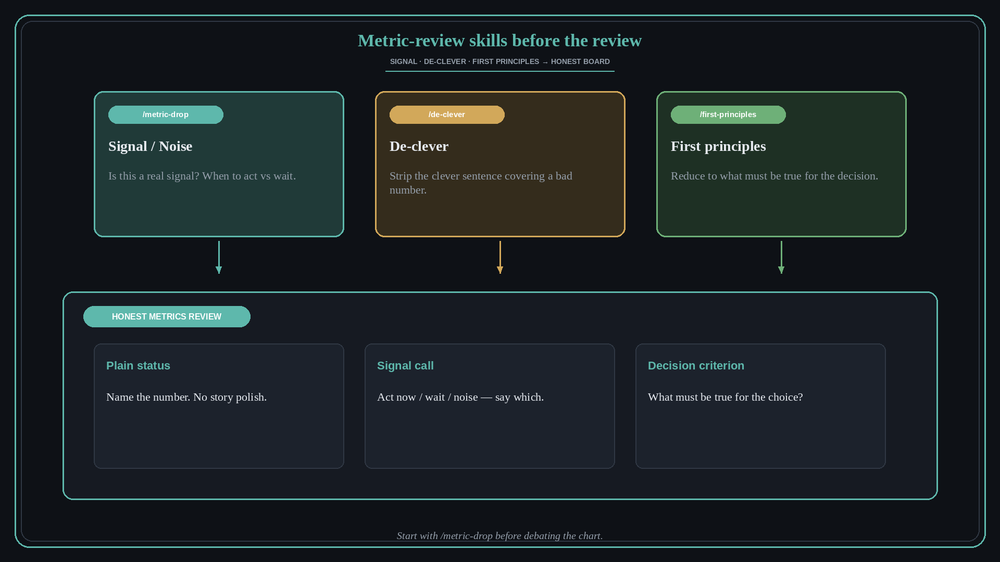

Start metrics review with signal, honesty, and first principles
Source: George / prodmgmt.world (@nurijanian)
original post
What it claims
Before the next metrics review, load three Claude/Codex skills: /metric-drop (is this a real signal or noise, and when to act), /de-clever (strip the clever sentence covering a bad number), /first-principles (reduce the decision to what must be true). Start with /metric-drop.
Why it matters for a PO
Metrics reviews reward narrative polish; without a signal check and an honesty pass, the PO green-lights noise or hides the miss. First-principles forces the decision criteria before the slide story.
3 takeaways
- Ask signal-vs-noise and act-or-wait before debating the chart.
- Kill the clever sentence that papers over a miss — name the number plainly.
- Write what must be true for the decision; if the metric cannot speak to that, change the metric or the question.
Practice this week
Pick one metric on this week’s review. Run the three passes in order (signal, de-clever, first principles). Bring one sentence of plain status and one decision criterion to the review.